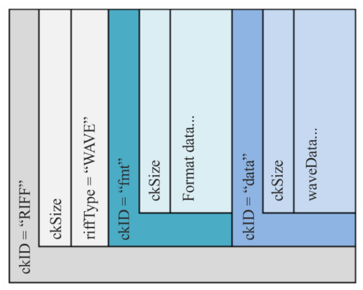

38 Mixage orienté objet
Par définition, un mixage son consiste à mélanger un certain nombre de canaux d’entrés vers un nombre de canaux de sorties plus faible. Le mixeur a pour rôle de réaliser et de maîtriser cette sommation.
Lors d’un mixage orienté objet, la méthode de travail est alors assez différente. Pour chaque canal d’entrée, nous allons y associer des métadonnées de mixage, par exemple son gain ou sa position dans l’espace.
Une fois cette association faite entre audio et métadonnées de mixage, on utilise un décodeur qui va, par lecture des métadonnées, adapter ces informations en fonction du système de haut-parleurs qui lui est affecté. Le mixage, c’est-à-dire la sommation des canaux, est alors réellement fait à l’étape de décodage. Quelque part, le mixeur réalise ici un “non-mixage”.
L’avantage principal du mixage orienté objet est donc de pouvoir produire différents formats d’écoutes à partir du même mixage (en théorie). On pourrait alors à partir des mêmes métadonnées produire un rendu pour un système stéréophonique, 5.1 et 9.1.6 (ou pourquoi pas, en ambisonique 22e ordre !).
Même si le mixage orienté objet n’implique pas un mixage spatialisé, cette technique de production est souvent employée dans ce contexte pour tenter de simplifier les problématiques de format multiple. Par exemple, on pourra travailler sur un mixage immersif, et pouvoir du même coup obtenir un mixage stéréophonique. On réalise alors un gain de temps évident par rapport à la méthode traditionnelle qui consiste à réaliser “n” mixages si l’on doit produire “n” formats de sorties.
Cette facilité de création de rendus différents n’épargne cependant pas les comportements parfois surprenants d’un mixage d’un système à un autre. Par exemple, un mixage réalisé sur une écoute quadriphonique risque d’être surprenant lors de son passage sur un arrangement 5.1. Il est généralement sage de travailler sur le système le plus grand que l’on souhaite cibler et de contrôler les “downmix”. L’inverse peut amener à certaines surprises.
Plusieurs fabricants proposent des formats et des outils de mixage orienté objet. En tête, on retrouve Dolby et son Dolby Atmos, possédant au jour d’aujourd’hui la plus grande part de marché (intégration native dans Pro Tools et Logic Pro). DTS et Auro 3D proposent également leurs propres outils. Enfin, Freinhaufer a défini le codec MPEG-H, implémentant l’Audio Definition Model comme base de métadonnées. L’ADM étant un format ouvert nous servira donc à décortiquer le fonctionnement de l’encodage et le décodage d’un mixage orienté objet.
38.1 L’Audio Definition Model
38.1.1 Présentation
L’Audio Definition Model est une autre recommandation de l’ITU, dont la dernière édition date de 2019. Ce papier concentre beaucoup d’informations importantes. Principalement, il s’agit de décrire une base commune, espérant devenir une base commune entre les différents acteurs de l’audio orienté objet. Le premier objectif est donc d’assurer l’interopérabilité entre les différentes solutions de mixage orienté objet.
Techniquement, l’ADM est donc un catalogue de descripteurs d’audio. Pour chaque canal audio, un certain nombre d’informations textuelles y sont associées. Elles sont donc lisibles par un être humain, et éditables.
38.1.2 Description des métadonnées
L’ADM permet la représentation de quatre “types” d’audio :
- Le channel-based ou orienté-canal
- L’HOA ou Ambisonie d’ordre plus élevé
- Les Matrix ou formats matricés
- Les objets
Le mot “objet” a deux sens dans la documentation de l’ADM. Un objet est un format, permettant le rendu dynamique d’un élément sonore (changement de position, de volume, etc.). Cependant, un objet est également un contenu, qui permet de référencer un bloc d’échantillons d’un canal audio.
En ce sens un objet audio en ADM peut représenter le canal d’un flux orienté objet, le canal d’un flux HOA, un élément d’une matrice ou un objet sonore !
L’ADM permet de définir plusieurs programmes, appelés “audioProgramme”. Prenons comme exemple le cas d’une série télévisée diffusée en France et en Grande-Bretagne. Nous aurions, dans ce cas, un premier audioProgramme contenant les voix françaises et le reste de la bande-son, puis ,un second contenant les voix anglaises et le reste de la bande-son. Nous aurions alors trois contenus audio (appelés audioContent) : les voix anglaises, les voix françaises et le reste de la bande-son (bruitages, montage son, musique, etc.). L’audioProgramme “version anglaise” contiendrait le audioContent voix anglaise et le reste de la bande son, celui “version française” contiendrait les audioContent voix française et le reste de la bande son. Ainsi, le spectateur peut choisir d’écouter l’audioProgramme qu’il préfère, de façon interactive.
Chacun de ces audioContent contiennent eux-même des objets, appelés audioObject. Dans notre exemple, nous aurions différents objets dans l’audioContent voix française correspondant aux différents comédiennes et comédiens. Ces audioObject permettent d’indiquer quels échantillons audio du fichier BW64 sont concernés. Il convient alors d’indiquer quel est le format audio de ces échantillons. Les audioObject pointent vers un audioPack qui lui même pointe vers un certain nombre de sous modules permettant de caractériser intégralement le format audio et où il doit être positionné dans l’espace.
Si l’audioObject est de type “directSpeaker”, on l’affecte à un haut-parleur, dont on renseigne une position fixe. Si ce haut-parleur existe dans l’arrangement de haut-parleurs connecté au décodeur ADM, le signal y est routé, sinon on interpole avec les haut-parleurs les plus proches.
Si l’audioObject est de type ambisonique, on cherche les autres objets appartenant au même flux, puis on décode l’ensemble, sur le système connecté au décodeur ADM.
Si l’audioObject est la composante d’une matrice, on cherche les autres objets appartenant au même flux, puis on dématrice l’ensemble vers nouvel audioPack de type “directSpeaker”.
Si l’audioObject est de type “object”, on regarde ses métadonnées de spatialisation puis on interpole cette position en utilisant les haut-parleurs les plus proches du point indiqué.
Gardons en tête que les audioObject “directSpeaker” ou ambisonique sont des mixages. Les scènes sonores qu’ils représentent sont statiques et immuables. Un audioObject de format objet contient un élément sonore (une voix, un instrument, un bruitage), que le décodeur ADM va ensuite mixer. Un objet peut donc être interactif. L’utilisateur pourrait changer son volume, sa position, etc.
38.1.3 Les métadonnées de spatialisation
L’ADM n’intègre qu’un jeu de paramètre très sommaire :
- Le niveau
- La position (en coordonnées cartésiennes et sphériques)
- La taille et diffusion de la source
Le niveau est un simple réglage de gain. La position permet de placer l’objet dans un espace virtuel en trois dimensions et selon deux systèmes de coordonnées. On préfère généralement le système sphérique, plus proche de notre perception sonore, cependant, la description de certains mouvements est plus simple dans un repère plutôt qu’un autre. Le paramètre de distance permet de placer une source entre les haut-parleurs et le point d’écoute idéal.
La largeur permet de jouer sur l’étalement de l’objet dans l’espace. En pratique, accroître ce paramètre augmente le nombre de haut-parleurs contribuant à la diffusion de l’objet sonore. Associé à la taille, le paramètre de diffusion permet d’ajouter de la décorrélation sur les haut-parleurs contribuant à la largeur de restitution de la source.
Il n’y a donc pas de descripteurs perceptifs ou d’espaces. L’approche de la spatialisation y est donc très basique, voire simpliste. Comme nous le verrons dans les sections plus pratiques, cela impose des techniques de mixage relativement complexes à fin de contourner ses limitations.
Malheureusement la plupart des moteurs de mixage orienté objet souffrent de ces mêmes lacunes, y compris le Dolby Atmos. L’exception principale est l’IRCAM Spat ainsi que le Spat Revolution de FLUX:: Immersive.
38.1.4 Inscription des métadonnées dans un fichier audio
L’ADM décrit la possibilité d’inscrire les métadonnées de mixage directement dans un fichier audio, contenant lui-même l’ensemble des données audio nécessaires. Dans le cadre d’un mixage orienté objet, ce fichier audio peut posséder autant de canaux que d’objets déclarés. Le format retenu pour les stockages de ces informations est le BW64 (Broadcast Wavefile 64 bit).
Le BW64 est une extension du format BWF. Tous deux sont également définis dans des recommandations de l’ITU. Ces fichiers prennent la forme de simples fichiers “wave” (monfichier.wav).
Également, on parle d’un en-tête de fichier, pour qualifier l’ensemble des métadonnées (nom, type de fichier, conteneur, etc.) précèdent la donnée utile (ici, les échantillons audio). Attention, les métadonnées ne sont pas toutes relatives à l’ADM. La plupart les fichiers possèdent des métadonnées pour indiquer aux programmes comment exploiter les données qu’ils stockent.

Illustations extraites du document BS.2088-2 de l’ITU
La figure Figure 38.3 fait mention de plusieurs “chunk” (section, bloc) nommé “axml”, “bxml”, “sxml”, “chna”. La globalité des informations est stockée sous la forme d’un XML dans les chunks “axml”, “bxml” ou “sxml”. Le chunk “chna” stocke les informations permettant de faire les liens entre les données audio et leur description dans l’ADM. Il est en général recommandé d’utiliser le chunk “axml” (le “bxml” est alors plutôt utilisé pour les surcouches à l’ADM, aussi appelés profiles).
38.2 Les profils ADM
Certains constructeurs ont choisis de proposer des sur-spécification à l’ADM, aussi appelés “profils”. Ces profils ont généralement deux buts :
- Rajouter des métadonnées spécifiques à l’utilisation de codec audio propriétaire.
- Limite les spécifications de l’ADM pour correspondre aux usages de certains domaines
Les deux principaux profils connus sont ceux du MPEG-H de Fraunhofer et de Dolby
Aucun des deux constructeurs n’ont choisit de maintenir le support de l’ambisonique dans leur format.
De plus, il n’existe à ce jour, aucun outil pour convertir un ADM d’un profil quelquonque vers un ADM Dolby. La compatibilité des formats n’est donc pas assurée.
## L’ADM Sériel (S-ADM)
Pour certaines applications, comme le live ou le streaming, la description des métadonnées sous forme d’un dictionnaire XML n’est pas adéquate. Ici, les flux audio sont en temps réel et ne dépendent pas nécessairement d’un fichier audio. Il existe donc une norme sérielle de l’ADM, permettant de transmettre les métadonnées dans une connexion numérique, type AES, MADI ou encore à travers de l’audio sur IP.
La description du S-ADM est disponible dans l’ITU-R BS.2125.
38.3 L’ADM OSC
L’ADM OSC est une initiative menée par FLUX:: Immersive, L-Acoustic et Radio France pour proposer une base de communication commune entre les différents moteurs de mixage orienté objet dans le monde du Live. Cela assure donc une interopérabilité minimale entre les principaux acteurs du milieu. À ce jour, les acteurs suivants se sont joints à la conversation : d&b Audiotechnik, DiGiCo, Dolby, Lawo, Magix, Merging Technologies, Meyer Sound, Steinberg.
Les logiciels implémentant l’ADM OSC comptent SPAT Revolution (FLUX::SE), L-ISA Controller (L-Acoustics), Ovation (Merging Technologies), Nuendo (Steinberg), SpaceMap Go (Meyer Sound), QLAB 5 (Figure 53), Space Controller (Sound Particles), Modulo Kinetic (Modulo Pi), Iosono (Barco).
Le code source de ce projet, développé sous une licence open source, est disponible dans ce répository github
38.4 L’étape de rendue
Tout ce que nous avons vu pour l’instant, au sujet de l’ADM, ne concerne au final que la description d’un mixage, et nous n’avons pour l’instant pas envisagé le “comment”. En d’autres termes, nous avons une liste d’ingrédients, mais ne savons pas comment les mélanger et les cuisiner entre eux.
Il existe une recommandation de l’ITU (BS-2127) consacrée au sujet du “renderer”, ou processeur de rendu. On fournit donc audio et métadonnées à ce moteur de rendu, qui, grâce à l’analyse de ces métadonnées et au système de haut-parleurs qui lui est connecté, peut calculer le gain de reproduction de chaque source et chaque haut-parleur.
38.4.1 Description de la loi de panoramique
La loi de panoramique recommandée par l’ITU BS-2127 empreinte beaucoup au LBAP (voir la ?sec-lbap). Nous sommes donc sur une loi de panoramique favorisant un point d’écoute idéal, situé à égale distance des haut-parleurs.
Ici, la distance ne s’exprime qu’entre les haut-parleurs et le point d’écoute idéal. En d’autres termes, la distance maximale correspond au plan des haut-parleurs, la distance minimale correspond au point d’écoute idéale. La distance ne contribue pas au gain de la source, mais plutôt à une sorte de spreading.
L’algorithme se décrit de la façon suivante :
- On recherche les couches (en élévation) de haut-parleurs au-dessus et en dessous de la source. On calcule alors le gain \(z\) en interpolant entre les deux couches.
- Sur chaque couche trouvée, on recherche les deux lignes de haut-parleurs en avant et en arrière de la source. On calcule ainsi le gain \(y\) en interpolant entre les deux lignes.
- Enfin, sur chaque ligne trouvée, on recherche la paire de haut-parleurs à gauche et à droit de la source, permettant finalement de calculer le gain \(x\) entre les deux haut-parleurs.
Si une source est positionnée sur un haut-parleur, alors seul celui-ci contribue à la diffusion sonore.
38.4.2 Largeur et décorrélation
Le paramètre de “size” ou taille permet de faire paraître une source plus grande en augmentant le nombre de haut-parleurs contribuant à la diffusion de la source. Ce paramètre “size” est enfaîte un macro-paramètre qui manipule trois autres paramètres:
- La largeur (étalement horizontal)
- La hauteur (étalement vertical)
- La profondeur (étalement dans la profondeur)
Par principe de source fantôme, augmenter le nombre de haut-parleurs contribuant à la diffusion d’une source n’augmente pas véritablement sa taille apparente dans notre perception de la scène sonore. La source vient plutôt se positionner au barycentre des haut-parleurs, pondéré par leur énergie de diffusion. Pour réellement créer un effet de “taille”, il est nécessaire d’introduire une différence suffisamment importante pour que notre oreille ait l’illusion d’un étalement dans l’espace. Cette différence doit également être suffisamment faible pour ne pas déformer le signal d’origine. On appelle cela la décorrélation. L’ITU recommande ici l’utilisation de filtres passe-tout sur chaque canal de diffusions.
38.4.3 Décodage ambisonique
L’ITU décrit l’utilisation d’un décodage AllRAD. Voir la [section -@HOA-decode-allrad]